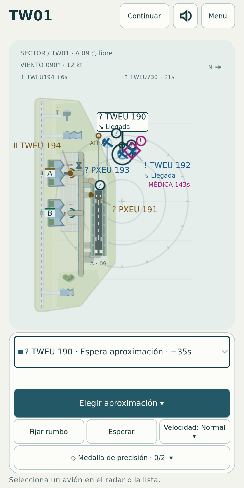
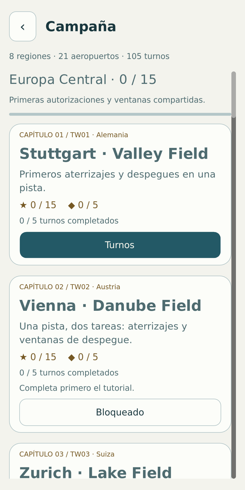
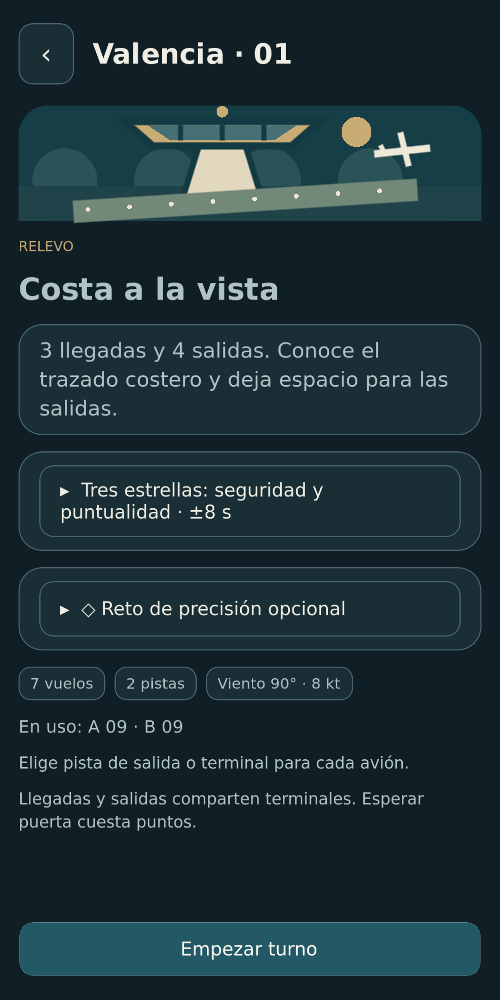

Ya disponible para Android
tøwer
Tu torre. Tu espacio aéreo.
Un aterrizaje más y luego el siguiente despegue: en tøwer, tú controlas el tráfico aéreo. Da instrucciones claras y lleva cada avión a su destino en un viaje de aeropuerto en aeropuerto.
Así es tøwer



Un nuevo reto en cada turno
Coordina despegues y aterrizajes
Planifica las rutas, ajusta el rumbo y la velocidad, y elige el momento adecuado para dar la siguiente autorización.
Un viaje por todo el mundo
Descubre aeropuertos con distintas distribuciones de pistas. Cada destino te invita a anticiparte de una forma diferente.
Mantén la calma entre tanto tráfico
A medida que aumenta el tráfico y cambian las condiciones, cada segundo cuenta. Presta atención y supera turnos cada vez más exigentes.
¿Listo para tu primer turno?
tøwer está disponible gratis en Google Play para Android. El juego incluye anuncios que puedes eliminar para siempre con una compra única.